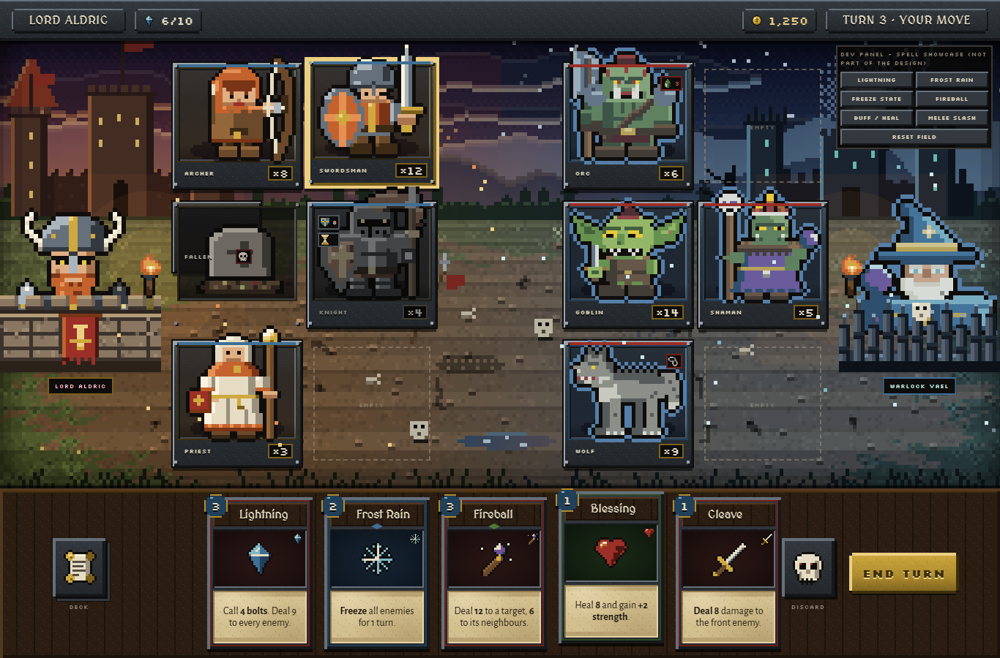
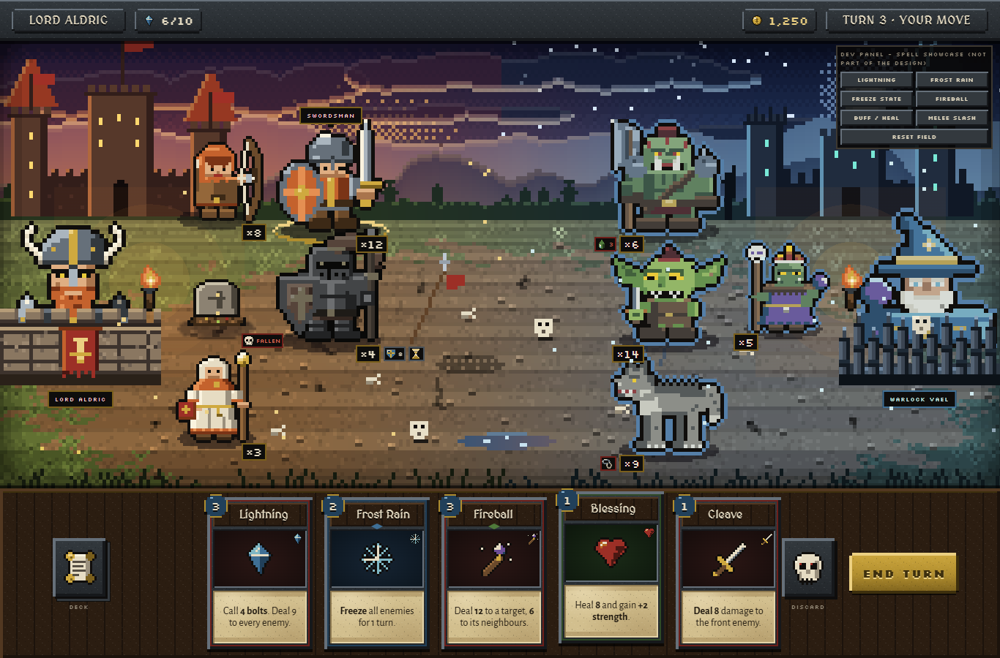
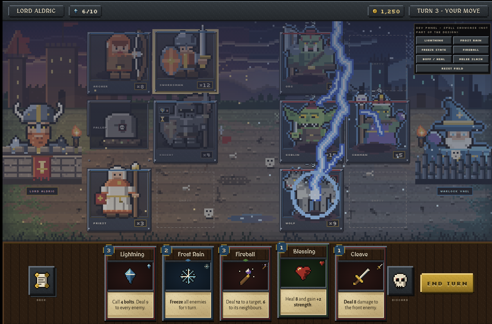
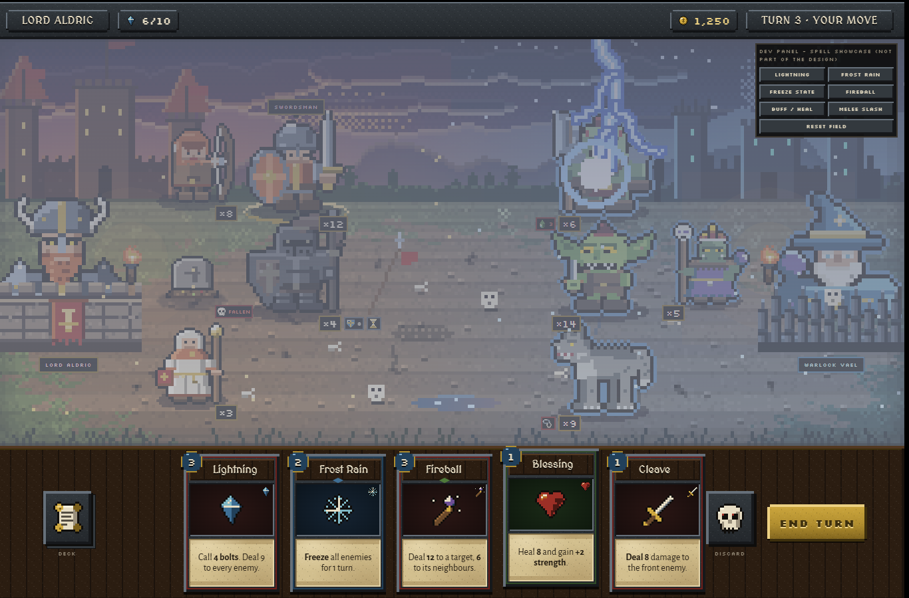
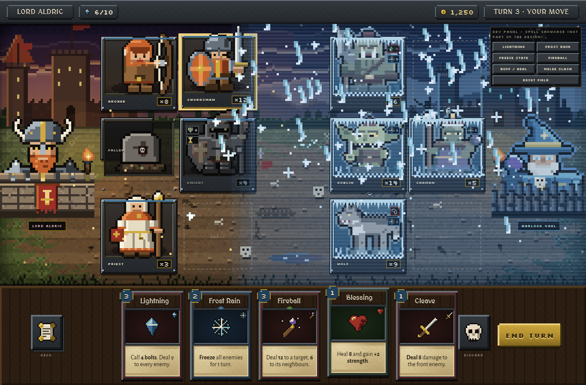
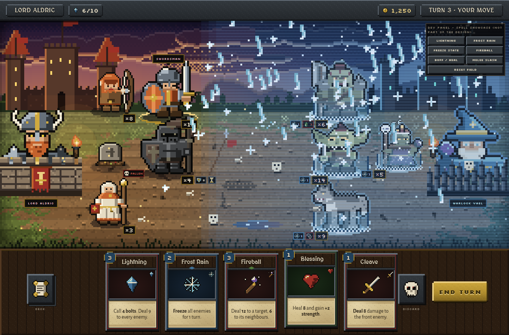
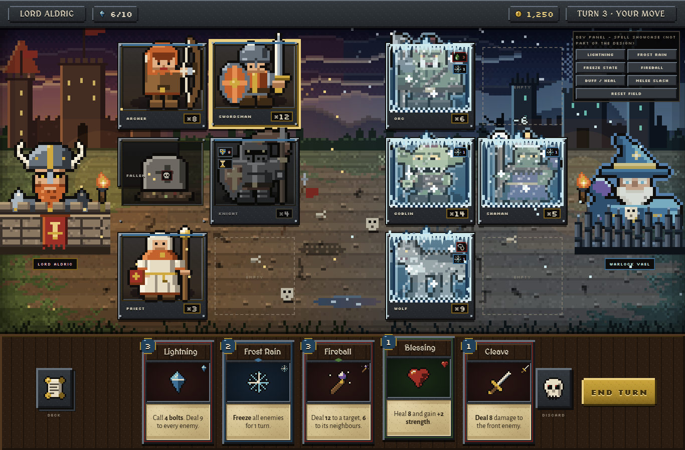
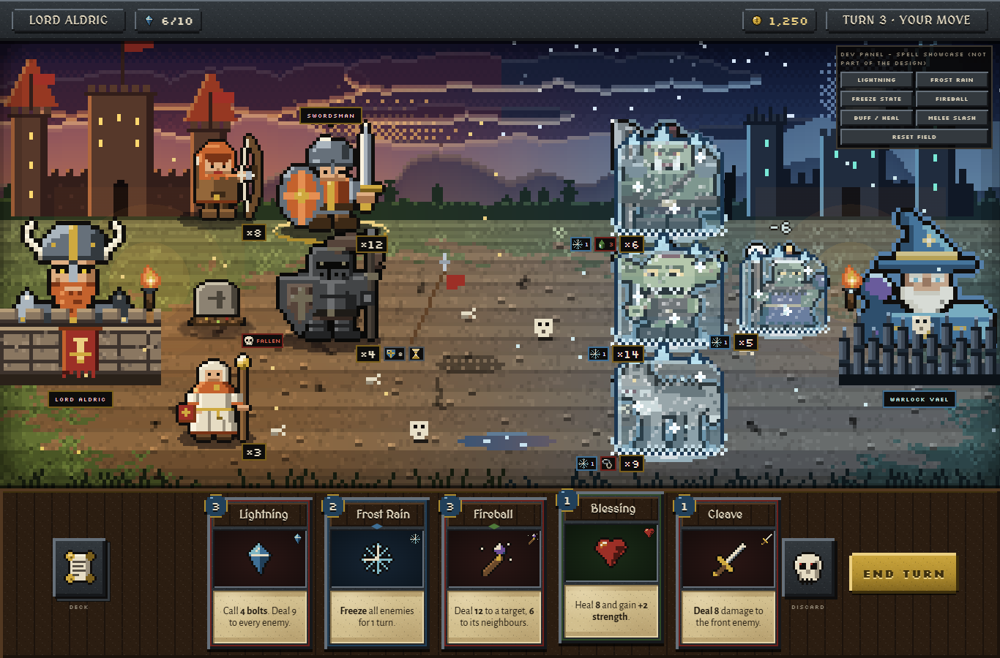
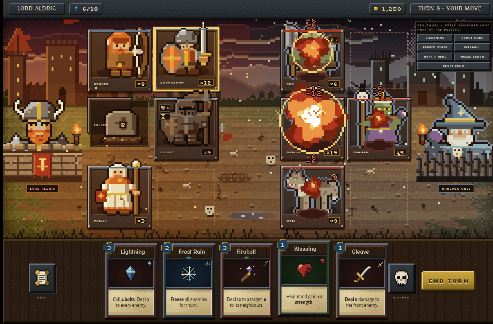
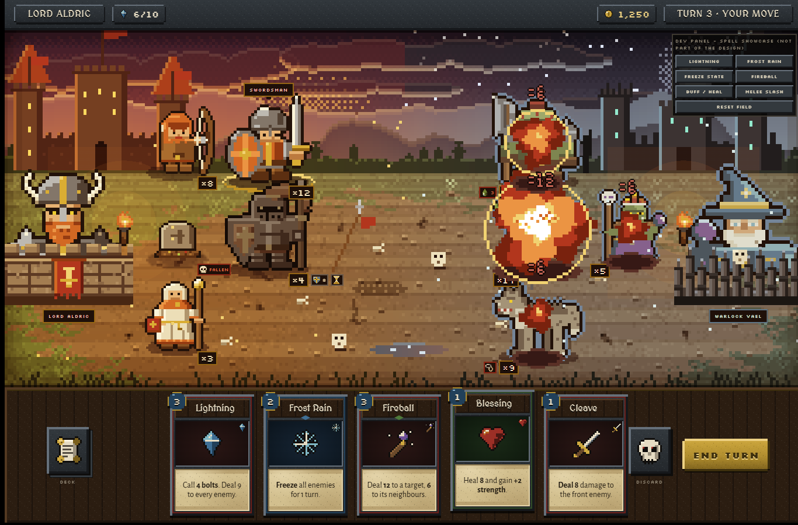

Both mocks use the same roster, top bar, hero busts behind their ramparts, hand tray (five cards, compact End Turn, deck and discard icons per AO-D063) and the same six interactive spell showcases in the small dev panel at the top right (Lightning, Frost rain, Freeze state, Fireball, Buff / heal, Melee slash; hovering a card in the hand shows the placement marks / target highlights). A keeps the framed slot rectangles but turns them into heavier riveted iron frames with sprites enlarged to x5 that pop above the frame, on top of a dusk landscape instead of a flat grid. B removes every rectangle: the stacks stand directly on the ground with contact shadows, the back row sits higher and smaller (x4 against x5), counts and status chips are small plates on the ground beside the feet, hover and selection are ground rings with name tags, and the open ground between the armies is the field of play, as in Heroes 3 and Disciples. B reads much more like a real battlefield and gives the spells a real place to land (frozen units stand in ice blocks on the field, fireball scorches the ground); A is the safer, cheaper step that keeps every click target and the row/column readability of today's screen.

Option A - framed slots on a sceneRiveted frames, x5 sprites popping out of the frame, name and count in the frame footer.
Option B - units stand on the battlefieldNo rectangles: shadows, ground rings, perspective ground, hover marks only on demand.







Standalone files: a.html, b.html (inline CSS and JS, Google Fonts links only, no build step). Sprites, palette and materials are the approved ones from docs/style-proof and src/ui/pixel; the battlefield, ramparts, ice, torches and grave are drawn in code. Motion uses stepped timing; with prefers-reduced-motion the idle loop, shake, flashes and travelling effects are replaced by one still frame of each spell. The dev panel is not part of the design.